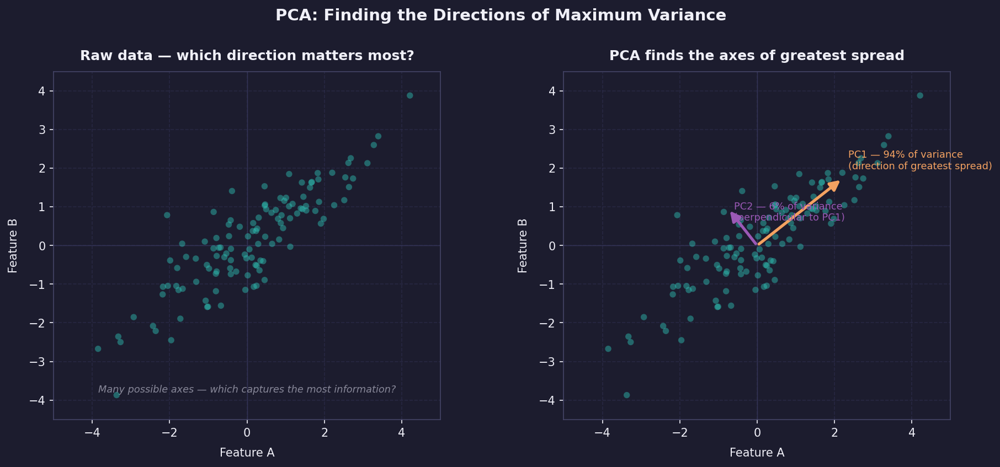
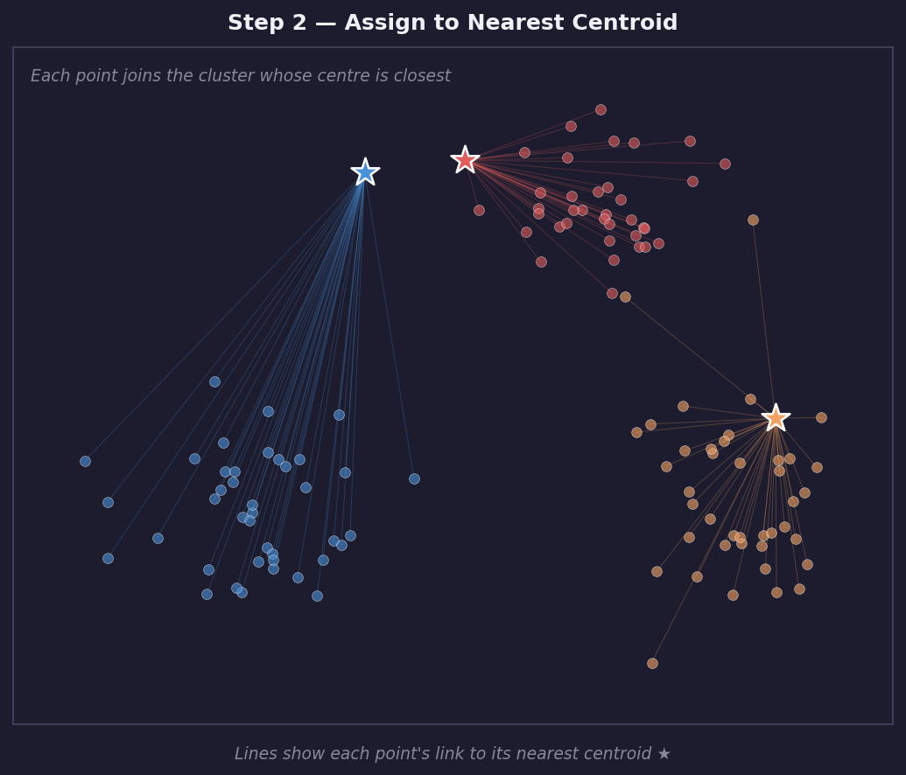
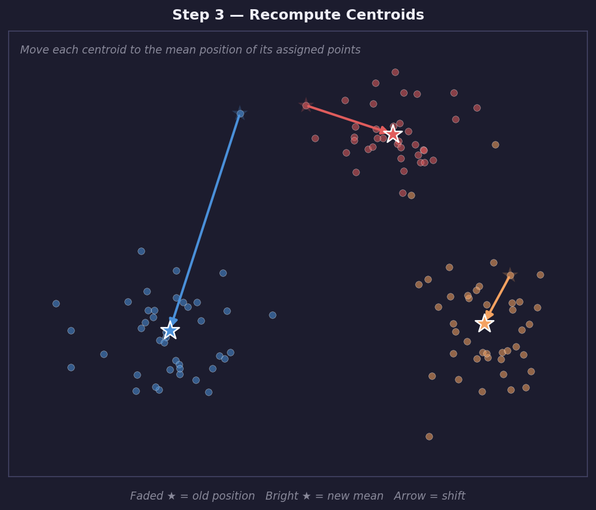
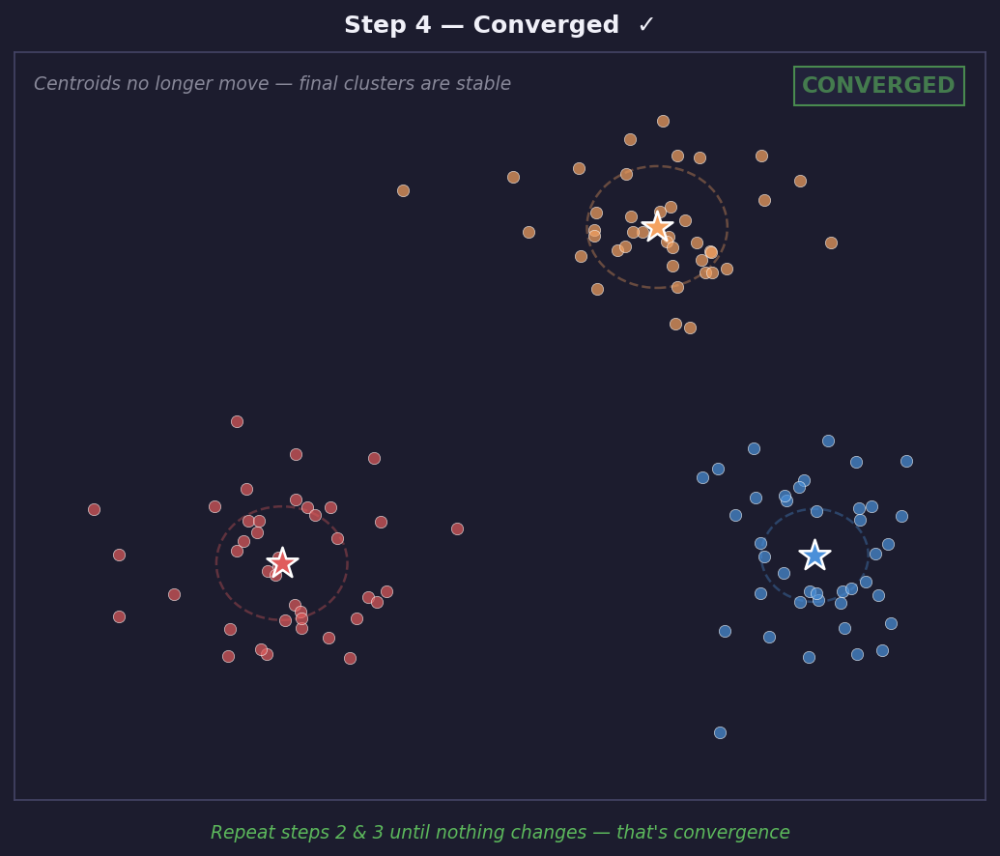
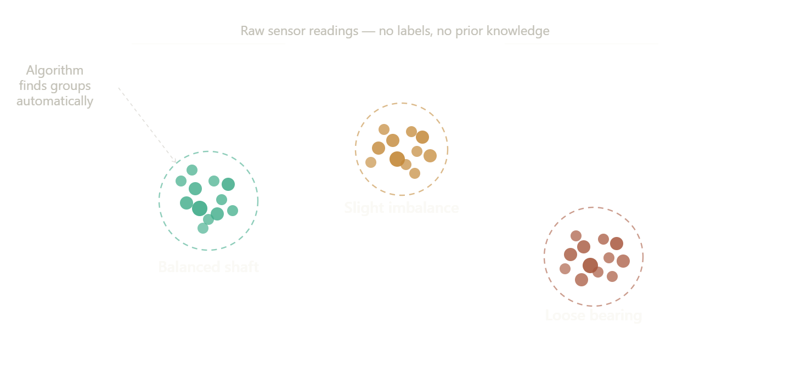
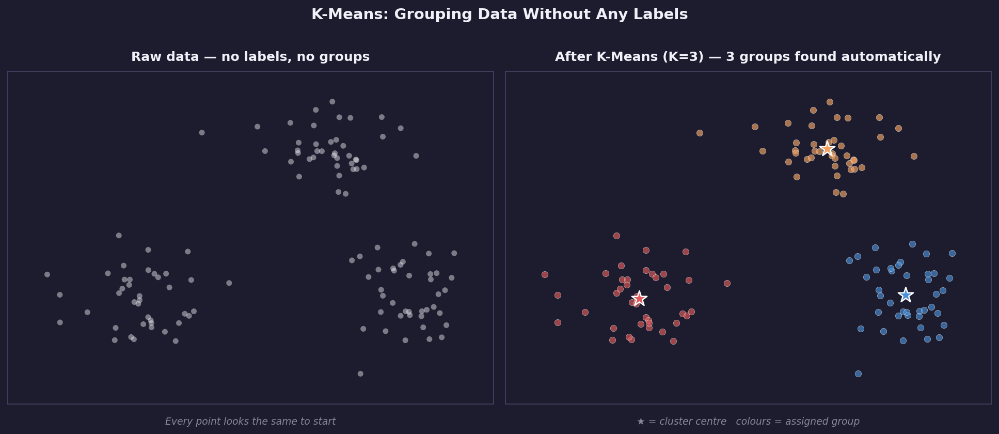

Chapter 4: Unsupervised Learning
Unsupervised Learning: Industrial Vibration Clustering
Unsupervised Learning — Machine learning that searches for structure in data without answer labels.
What Is Unsupervised Learning?
In supervised learning every row has a label : someone already answered the question for each example. A human looked at 10,000 sensor readings and wrote "failure" or "normal" next to each one. That labeling is expensive, slow, and sometimes impossible. Unsupervised learning works without labels. You give the algorithm raw data and ask it to find structure on its own: groups of similar rows, patterns that repeat, dimensions that capture the most variation. Nobody told the algorithm what to look for. It discovers it. Supervised Learning Data: rows WITH labels. Question: predict this label from these features. Example: sensor readings → failure or no failure. The algorithm is told what the answer looks like. Unsupervised Learning Data: rows WITHOUT labels. Question: what structure exists in this data? Example: sensor readings → how many natural groups? The algorithm is told nothing : it finds structure itself.
Robotics connection
A robot mapping an unknown building has no labeled floor plan. It must group sensor readings into wall, open space, and obstacle without anyone teaching it those categories. That is unsupervised learning in the real world.
Clustering & Dimensionality Reduction
Concept: Clustering & Dimensionality Reduction
Clustering
Clustering divides a dataset into groups where rows inside each group are more similar to each other than to rows in other groups. The algorithm does not know what the groups represent : that interpretation is your job as the engineer. Three clusters found automatically : the algorithm groups similar points together without being told what the groups mean. Labeling each cluster (normal, imbalanced, loose) is the engineer's job, not the algorithm's. A vibrating motor shaft might produce three distinct patterns of sensor readings: one when balanced correctly, one with a slight imbalance, and one with a loose bearing. Clustering discovers these three modes automatically even if no one ever labeled which readings belonged to which state. Run to see three vibration modes that K-Means will learn to separate
import numpy as np
import matplotlib.pyplot as plt
t = np.linspace(0, 2, 1000)
normal = np.sin(2 * np.pi * 10 * t) * 0.5
imbalanced = np.sin(2 * np.pi * 18 * t) * 1.2
loose = np.sin(2 * np.pi * 10 * t) + 0.4 * np.sin(2 * np.pi * 45 * t)
fig, axes = plt.subplots(3, 1, figsize=(10, 6), sharex=True)
fig.patch.set_facecolor('#0d1117')
for ax, signal, label, color in zip(
axes,
[normal, imbalanced, loose],
['Normal operation', 'Imbalanced shaft', 'Loose bearing'],
['#10b981', '#f97316', '#ef4444']
):
ax.plot(t, signal, color=color, linewidth=1.2)
ax.set_ylabel(label, color='#8b949e', fontsize=9)
ax.set_facecolor('#0d1117')
ax.tick_params(colors='#8b949e')
ax.spines[:].set_color('#30363d')
axes[-1].set_xlabel("Time (s)", color='#8b949e')
fig.suptitle("Three vibration modes — same shaft, different faults",
color='#e6edf3', fontsize=11)
plt.tight_layout()
plt.show()
PCA
Principal Component Analysis (PCA) is not a clustering algorithm. It is a dimensionality reduction technique: it compresses many features into fewer dimensions while preserving as much variation as possible.

PCA projects high-dimensional data onto fewer dimensions. Three features compressed to two : the two directions that capture the most variation in the original data are kept, the rest is discarded. Imagine your feature table has 10 columns. You cannot plot 10 dimensions. PCA finds the two directions in that 10-dimensional space that capture the most variation and projects everything onto those two axes. The result is a 2D scatter plot you can actually look at. PCA does not label the axes for you. The first principal component is the direction of greatest variance in your data. It might correspond roughly to overall vibration intensity or frequency content, but you interpret that from the data, not from PCA.

PC1 points in the direction of greatest variance in the data. PC2 points perpendicular to PC1, capturing the next largest spread. Neither axis is labeled automatically : you read the data to decide what each principal component represents. Run to see PCA projecting 4 features into 2D
import numpy as np
import matplotlib.pyplot as plt
from sklearn.decomposition import PCA
from sklearn.preprocessing import StandardScaler
from sklearn.datasets import make_blobs
np.random.seed(42)
X, labels = make_blobs(n_samples=300, centers=3,
n_features=4, cluster_std=0.9,
random_state=42)
X_scaled = StandardScaler().fit_transform(X)
pca = PCA(n_components=2)
X_2d = pca.fit_transform(X_scaled)
fig, (ax1, ax2) = plt.subplots(1, 2, figsize=(12, 5))
fig.patch.set_facecolor('#0d1117')
colors = ['#10b981', '#f97316', '#6366f1']
for i, color in enumerate(colors):
mask = labels == i
ax1.scatter(X_scaled[mask, 0], X_scaled[mask, 1],
color=color, s=20, alpha=0.7, label=f'Group {i}')
ax2.scatter(X_2d[mask, 0], X_2d[mask, 1],
color=color, s=20, alpha=0.7, label=f'Group {i}')
for ax, title in zip([ax1, ax2],
['Original: 2 of 4 features shown', 'After PCA: all 4 features compressed to 2D']):
ax.set_title(title, color='#e6edf3', fontsize=10)
ax.set_facecolor('#0d1117')
ax.tick_params(colors='#8b949e')
ax.spines[:].set_color('#30363d')
ax.legend(facecolor='#161b22', labelcolor='white', fontsize=8)
var = pca.explained_variance_ratio_
ax2.set_xlabel(f'PC1 ({var[0]*100:.0f}% variance)', color='#8b949e')
ax2.set_ylabel(f'PC2 ({var[1]*100:.0f}% variance)', color='#8b949e')
plt.tight_layout()
plt.show()
print(f"Variance explained: PC1={var[0]*100:.1f}% PC2={var[1]*100:.1f}%")
print(f"Total captured: {sum(var)*100:.1f}% of original information")
PCA does not find clusters
PCA and K-Means are two different tools that work well together. K-Means finds the clusters. PCA lets you visualize them. Always run K-Means on the original scaled features, not on the PCA-reduced version, unless the dataset is very large and speed is a concern.
K-Means Deep Dive
What is K-Means?
K-Means is an algorithm that automatically groups data points into K clusters — where each cluster contains points that are similar to each other and different from the other groups. You do not tell it what the groups mean; it finds the groupings on its own just from the numbers.
Real-world analogy
Imagine you tip a bag of mixed marbles onto a table — red, blue, and green ones all mixed together. You do not know how many colours are in the bag, so you pick 3 spots on the table as starting piles and then slide each marble to whichever pile it is closest to. After one pass you recalculate the centre of each pile and repeat. After a few passes the marbles have naturally sorted themselves by colour. That is K-Means.
In robotics this is useful whenever you have sensor readings but no labels — for example, grouping vibration patterns to discover which ones tend to precede a failure, without anyone having hand-labelled the data first.
How K-Means works — step by step
The algorithm repeats two simple operations until nothing changes. You choose K (the number of clusters) before it starts — the rest is automatic.
1. Random Initialization
Place K centroids at random positions in feature space. These starting positions are guesses — the algorithm corrects them over the next steps. The quality of the final result can depend on where centroids start, which is why most implementations run K-Means multiple times with different random starts and keep the best result. scikit-learn's n_init="auto" handles this automatically.

2. Assign
Calculate the distance from every data point to every centroid. Assign each point to its closest centroid. All points assigned to the same centroid form one cluster. After this step every point belongs to exactly one cluster.

3. Recompute
Move each centroid to the mean position of all points currently assigned to it. If cluster 1 contains 50 points, its new centroid is the average position of those 50 points. This is where the word Means in K-Means comes from.

4. Converge
Repeat assign and recompute until no point changes its cluster between iterations. At this point centroids have settled and the algorithm has converged. This is guaranteed to happen but is not guaranteed to find the globally best solution — only a local one.

Run to see K-Means converge step by step
import numpy as np
import matplotlib.pyplot as plt
from sklearn.datasets import make_blobs
np.random.seed(42)
X, _ = make_blobs(n_samples=150, centers=3,
cluster_std=0.7, random_state=42)
K = 3
# Manual K-Means for visualization
centroids = X[np.random.choice(len(X), K, replace=False)]
steps = []
for iteration in range(6):
dists = np.linalg.norm(X[:, None] - centroids[None, :], axis=2)
labels = dists.argmin(axis=1)
steps.append((centroids.copy(), labels.copy()))
new_centroids = np.array([X[labels == k].mean(axis=0)
for k in range(K)])
if np.allclose(centroids, new_centroids):
break
centroids = new_centroids
n_steps = min(len(steps), 4)
fig, axes = plt.subplots(1, n_steps, figsize=(4*n_steps, 4))
fig.patch.set_facecolor('#0d1117')
colors = ['#10b981', '#f97316', '#6366f1']
for i, ax in enumerate(axes):
c, l = steps[i]
for k, color in enumerate(colors):
mask = l == k
ax.scatter(X[mask, 0], X[mask, 1], color=color,
s=15, alpha=0.6)
ax.scatter(c[k, 0], c[k, 1], color=color,
s=200, marker='*', edgecolors='white', linewidths=0.8)
ax.set_title(f'Iteration {i+1}', color='#e6edf3', fontsize=10)
ax.set_facecolor('#0d1117')
ax.tick_params(colors='#8b949e')
ax.spines[:].set_color('#30363d')
ax.set_xticks([])
ax.set_yticks([])
plt.suptitle("K-Means converging — stars are centroids",
color='#e6edf3', fontsize=11)
plt.tight_layout()
plt.show()
Elbow Method
K-Means requires you to choose K before running : but how do you know the right number? The elbow method gives a data-driven answer. Run K-Means for K=1 through 10. For each K record the inertia: the total squared distance from every point to its centroid. As K increases, inertia always decreases. The useful question is: where does adding another cluster stop helping significantly? The elbow is where the curve bends. Beyond that point, extra clusters reduce inertia only slightly and add complexity without insight. Run to see the elbow method on sample data
import numpy as np
import matplotlib.pyplot as plt
from sklearn.cluster import KMeans
from sklearn.datasets import make_blobs
np.random.seed(42)
X, _ = make_blobs(n_samples=300, centers=3,
cluster_std=0.8, random_state=42)
ks = range(1, 11)
inertias = []
for k in ks:
km = KMeans(n_clusters=k, random_state=42, n_init='auto')
km.fit(X)
inertias.append(km.inertia_)
fig, ax = plt.subplots(figsize=(8, 5))
fig.patch.set_facecolor('#0d1117')
ax.plot(list(ks), inertias, 'o-', color='#6366f1', linewidth=2,
markersize=7, markerfacecolor='white')
ax.axvline(x=3, color='#ef4444', linestyle='--', linewidth=1.5,
label='Elbow at K=3')
ax.annotate('Elbow — adding more\nclusters helps less here',
xy=(3, inertias[2]), xytext=(5, inertias[2]*1.3),
color='#ef4444', fontsize=9,
arrowprops=dict(arrowstyle='->', color='#ef4444'))
ax.set_xlabel('Number of clusters K', color='#8b949e')
ax.set_ylabel('Inertia', color='#8b949e')
ax.set_title('Elbow Method — finding the right K', color='#e6edf3')
ax.set_facecolor('#0d1117')
ax.tick_params(colors='#8b949e')
ax.spines[:].set_color('#30363d')
ax.legend(facecolor='#161b22', labelcolor='white')
plt.tight_layout()
plt.show()
print("Inertia values:")
for k, inertia in zip(ks, inertias):
bar = '█' * int(inertia / inertias[0] * 30)
print(f" K={k:2d}: {bar} {inertia:.0f}")
The elbow is not always obvious
On real data the elbow is often a gentle curve rather than a sharp bend. If you cannot see a clear elbow, try silhouette score as a second opinion : it measures how well-separated the clusters are. Higher silhouette score is better.
DBSCAN: When Clusters Are Not Round
K-Means assumes clusters are roughly round and requires you to specify K in advance. DBSCAN (Density-Based Spatial Clustering of Applications with Noise) has neither limitation. It defines a cluster as a dense region of points and marks sparse points as noise (-1) rather than forcing them into a cluster.
DBSCAN is powerful when clusters have irregular shapes, when outliers need to be identified explicitly, or when the number of clusters is unknown. The tradeoff: it is sensitive to two parameters: eps, the neighborhood radius, and min_samples, the minimum points to form a cluster. Finding good values requires experimentation.
Project: Clustering Robot Sensor Readings
Project: Clustering Robot Sensor Readings
Dataset: Screw Machine / Rotating Shaft Vibration Data. If the Kaggle file changes, the fallback is synthetic vibration data representing normal, imbalanced, and loose modes.
What you are building
A CNC machine generates vibration data continuously. Over time the shaft develops faults : imbalance, loose bearings, misalignment. Each fault produces a different vibration pattern. The goal of this project is to cluster those patterns automatically without any labeled examples. An engineer can then look at each cluster and give it a name: normal, imbalanced, or loose. This is real-world unsupervised learning. The dataset comes from a rotating shaft instrumented with a vibration sensor. You will extract statistical features from the raw signal, run K-Means to find natural groupings, and use PCA to visualize whether the clusters correspond to real physical operating modes. 1. Download the vibration dataset from Kaggle 2. Plot the raw signal to understand what you are working with 3. Extract features from 256-sample windows 4. Scale the features 5. Use the elbow method to find K 6. Fit K-Means and assign cluster labels 7. Visualize clusters with PCA 8. Interpret what each cluster means physically Open in Colab →
All ten cells run in Google Colab : click Open in Colab above to open the pre-filled notebook and run top to bottom.
This cell installs the Kaggle library and uses your API token to download the vibration dataset directly into Colab. Cell 1: Kaggle download — expect: dataset files extracted
!pip -q install kaggle
import json
import os
from getpass import getpass
os.makedirs("/root/.kaggle", exist_ok=True)
token = json.loads(getpass("Paste your Kaggle API token text: ").strip())
with open("/root/.kaggle/kaggle.json", "w") as f:
json.dump(token, f)
os.chmod("/root/.kaggle/kaggle.json", 0o600)
!kaggle datasets download -d jishnukoliyadan/vibration-analysis-on-rotating-shaft
!unzip -o vibration-analysis-on-rotating-shaft.zip -d vibration_data
Load the downloaded CSV, or generate synthetic vibration data automatically if the download failed : the analysis works either way. Cell 2: Load data — expect: table with time and vibration columns
import numpy as np
import pandas as pd
import matplotlib.pyplot as plt
from pathlib import Path
files = list(Path("vibration_data").glob("*.csv"))
if files:
df = pd.read_csv(files[0])
else:
t = np.linspace(0, 60, 6000)
normal = np.sin(2 * np.pi * 10 * t[:2000]) * 0.5
imbalanced = np.sin(2 * np.pi * 18 * t[:2000]) * 1.2
loose = np.sin(2 * np.pi * 10 * t[:2000]) + 0.4 * np.sin(2 * np.pi * 45 * t[:2000])
signal = np.r_[normal, imbalanced, loose]
df = pd.DataFrame({"time": t, "vibration": signal})
display(df.head())
print(df.shape)
Plot the raw signal before processing anything : a flat line or missing data shows up immediately in a waveform plot. Cell 3: Plot signal — expect: waveform chart
signal_col = "vibration" if "vibration" in df.columns else df.select_dtypes("number").columns[-1]
fig, ax = plt.subplots(figsize=(12, 3))
fig.patch.set_facecolor('#0d1117')
ax.plot(df[signal_col].values[:2000], color='#10b981', linewidth=1.2)
ax.set_title("Raw vibration signal", color='#e6edf3')
ax.set_xlabel("Sample", color='#8b949e')
ax.set_ylabel("Amplitude", color='#8b949e')
ax.set_facecolor('#0d1117')
ax.tick_params(colors='#8b949e')
ax.spines[:].set_color('#30363d')
plt.tight_layout()
plt.show()
K-Means works on numbers, not raw waves : this cell extracts four statistical features from each 256-sample window. Cell 4: Feature engineering — expect: table with mean, std, max, fft_peak
values = df[signal_col].dropna().to_numpy()
window = 256
features = []
for start in range(0, len(values) - window, window):
chunk = values[start:start + window]
fft = np.abs(np.fft.rfft(chunk))
features.append({
"mean": chunk.mean(),
"std": chunk.std(),
"max": chunk.max(),
"fft_peak": fft[1:].argmax() + 1
})
feature_df = pd.DataFrame(features)
display(feature_df.head())
Scale features to equal ranges so K-Means does not ignore small-valued columns when computing distances. Cell 5: Scale features — expect: no output, silent success
from sklearn.preprocessing import StandardScaler
scaler = StandardScaler()
X_scaled = scaler.fit_transform(feature_df)
Run K-Means for K=1 through 10 and plot the inertia to find the natural number of clusters in the data. Cell 6: Elbow method — expect: curve bending near K=3
from sklearn.cluster import KMeans
ks = range(1, 11)
inertias = []
for k in ks:
kmeans = KMeans(n_clusters=k, random_state=42, n_init="auto")
kmeans.fit(X_scaled)
inertias.append(kmeans.inertia_)
fig, ax = plt.subplots(figsize=(8, 5))
fig.patch.set_facecolor('#0d1117')
ax.plot(list(ks), inertias, marker="o", color='#6366f1', linewidth=2)
ax.set_xlabel("K", color='#8b949e')
ax.set_ylabel("Inertia", color='#8b949e')
ax.set_title("Elbow Method", color='#e6edf3')
ax.set_facecolor('#0d1117')
ax.tick_params(colors='#8b949e')
ax.spines[:].set_color('#30363d')
plt.tight_layout()
plt.show()
Fit K-Means with K=3 and assign every window to a cluster : then look at the average feature values per cluster. Cell 7: Fit K-Means — expect: table of mean values per cluster
kmeans = KMeans(n_clusters=3, random_state=42, n_init="auto")
cluster_labels = kmeans.fit_predict(X_scaled)
feature_df["cluster"] = cluster_labels
display(feature_df.groupby("cluster").mean())
Compress the four-feature space into two dimensions with PCA so the clusters can be visualized on a scatter plot. Cell 8: PCA scatter — expect: three colored clusters
from sklearn.decomposition import PCA
pca = PCA(n_components=2)
points_2d = pca.fit_transform(X_scaled)
fig, ax = plt.subplots(figsize=(8, 5))
fig.patch.set_facecolor('#0d1117')
scatter = ax.scatter(points_2d[:, 0], points_2d[:, 1],
c=cluster_labels, cmap="viridis", s=25, alpha=0.8)
ax.set_xlabel("PC1", color='#8b949e')
ax.set_ylabel("PC2", color='#8b949e')
ax.set_title("K-Means clusters in PCA space", color='#e6edf3')
ax.set_facecolor('#0d1117')
ax.tick_params(colors='#8b949e')
ax.spines[:].set_color('#30363d')
cbar = plt.colorbar(scatter, label="Cluster")
cbar.ax.yaxis.label.set_color('#8b949e')
cbar.ax.tick_params(colors='#8b949e')
plt.tight_layout()
plt.show()
Print the mean and standard deviation of each feature per cluster so you can give each cluster an engineering label. Cell 9: Interpret clusters — expect: summary table to label manually
summary = feature_df.groupby("cluster").agg(["mean", "std"])
display(summary)
for cluster_id, row in feature_df.groupby("cluster").mean().iterrows():
print(f"Cluster {cluster_id}: std={row['std']:.3f}, fft_peak={row['fft_peak']:.1f}")
Try DBSCAN as an alternative : it finds clusters without needing K specified in advance and marks outliers as -1. Cell 10: DBSCAN — expect: scatter plot, some points labeled -1
from sklearn.cluster import DBSCAN
dbscan = DBSCAN(eps=0.8, min_samples=5)
db_labels = dbscan.fit_predict(X_scaled)
fig, ax = plt.subplots(figsize=(8, 5))
fig.patch.set_facecolor('#0d1117')
scatter = ax.scatter(points_2d[:, 0], points_2d[:, 1],
c=db_labels, cmap="tab10", s=25, alpha=0.8)
ax.set_title("DBSCAN clusters in PCA space", color='#e6edf3')
ax.set_xlabel("PC1", color='#8b949e')
ax.set_ylabel("PC2", color='#8b949e')
ax.set_facecolor('#0d1117')
ax.tick_params(colors='#8b949e')
ax.spines[:].set_color('#30363d')
cbar = plt.colorbar(scatter, label="DBSCAN label")
cbar.ax.yaxis.label.set_color('#8b949e')
cbar.ax.tick_params(colors='#8b949e')
plt.tight_layout()
plt.show()

